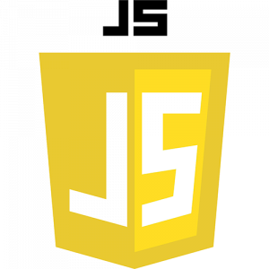
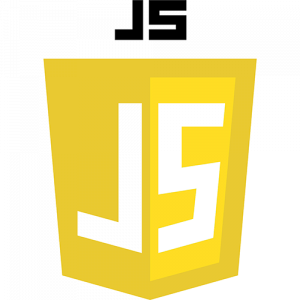
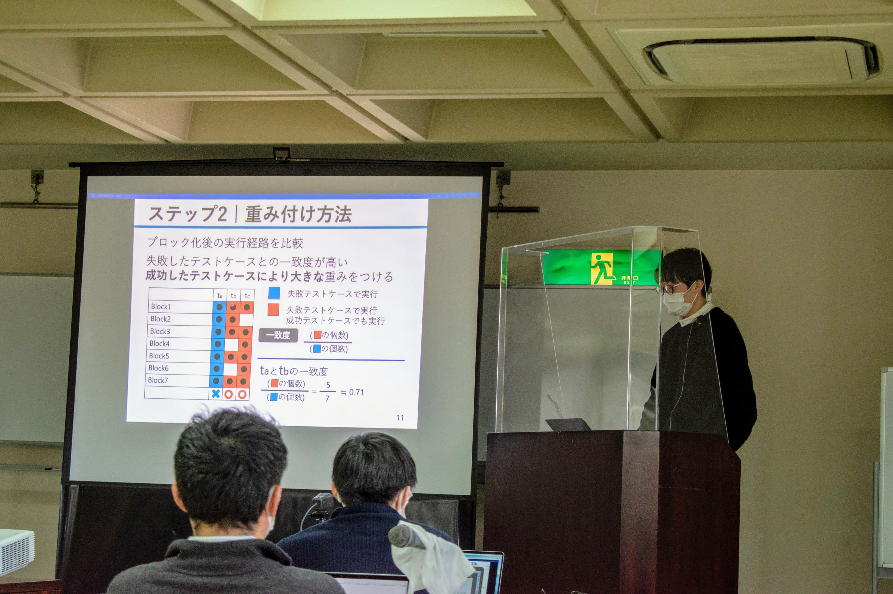
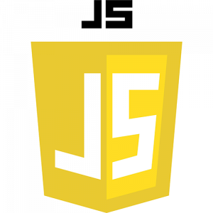

使ったことがあるプログラミング言語
Java C
C Python
Python JavaScript
ShellScript
JavaScript
ShellScript HTML
HTML CSS
CSS
|  |
吉岡遼
Yoshioka Haruka
大阪大学大学院情報科学研究科所属
E-mail: h-yosiok[at]ist.osaka-u.ac.jp |
| 2018年 4月 | 大阪大学基礎工学部 入学 |
| 2022年 3月 | 大阪大学基礎工学部 卒業 |
| 2022年 4月 | 大阪大学大学院情報科学研究科 入学 |
Java
C
Python
JavaScript
ShellScript
HTML
CSS
Y. Lei, H. Xie, T. Zhang, M. Yan, Z. Xu and C. Sun, "Feature-FL: Feature-Based Fault Localization," in IEEE Transactions on Reliability, vol. 71, no. 1, pp. 264-283, March 2022
A. Bandyopadhyay and S. Ghosh, "Proximity based weighting of test cases to improve spectrum based fault localization," 2011 26th IEEE/ACM International Conference on Automated Software Engineering (ASE 2011), 2011, pp. 420-423
Yiling Lou, Ali Ghanbari, Xia Li, Lingming Zhang, Haotian Zhang, Dan Hao, and Lu Zhang. 2020. Can automated program repair refine fault localization? a unified debugging approach. In Proceedings of the 29th ACM SIGSOFT International Symposium on Software Testing and Analysis (ISSTA 2020).
Haruka Yoshioka, Yoshiki Higo, and Shinji Kusumoto. 2022. "Improving Weighted-SBFL by Blocking Spectrum," In Proceedings of the 22nd IEEE International Working Conference on Source Code Analysis and Manipulation (SCAM 2022).